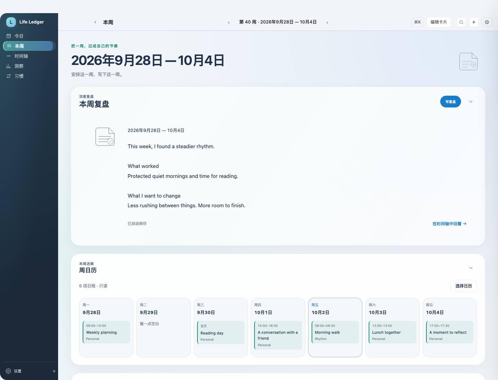
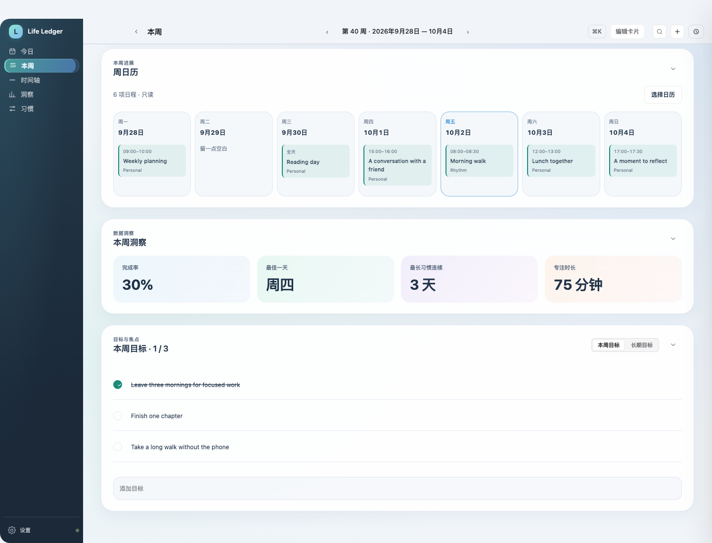
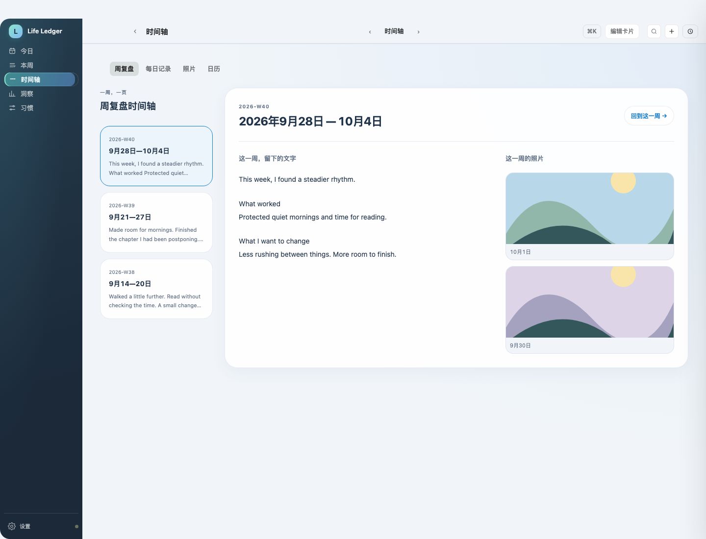
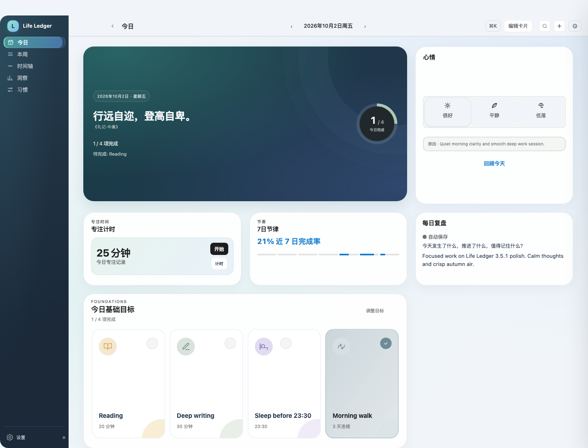
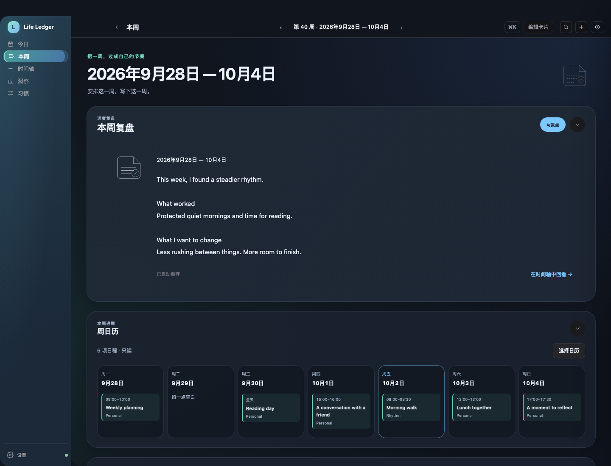
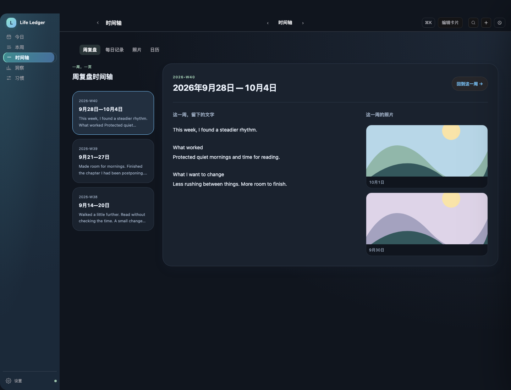
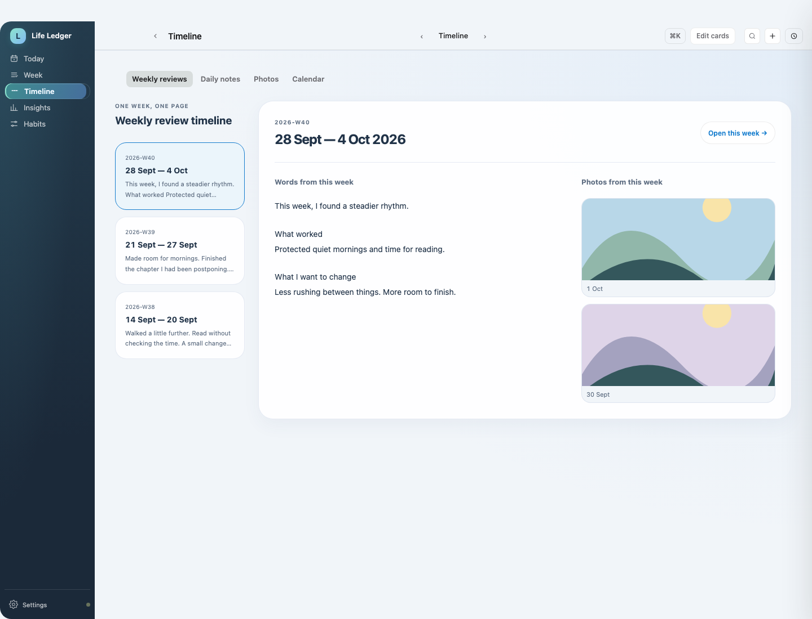
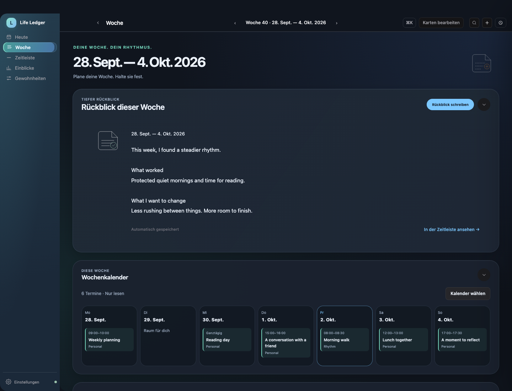
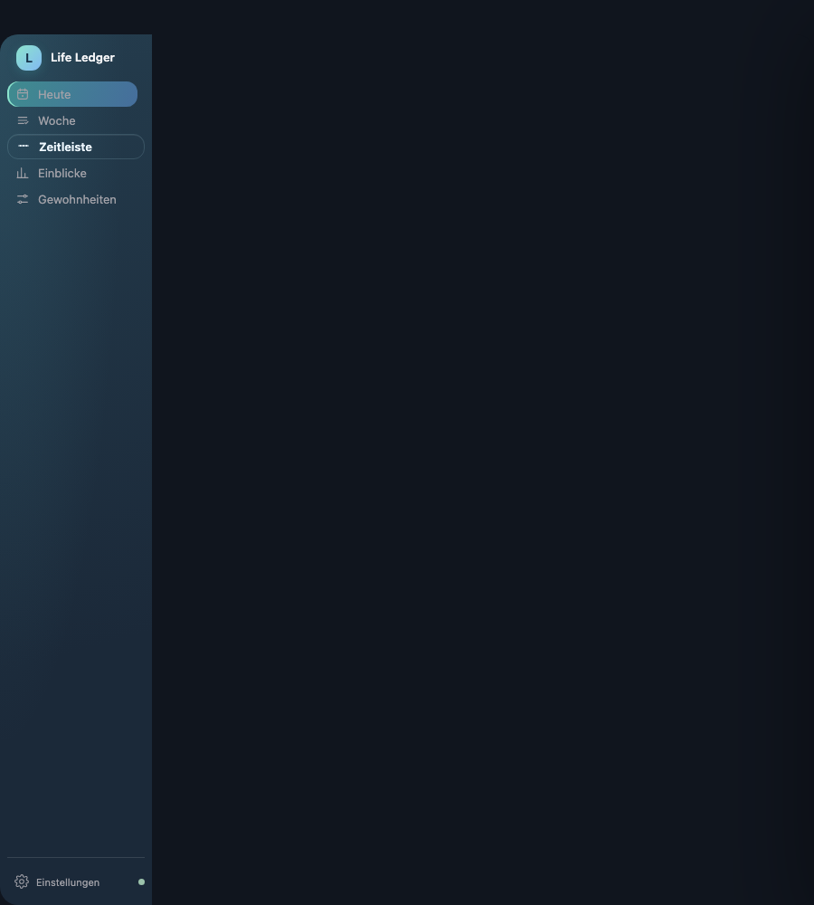
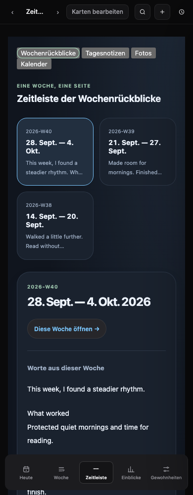

本周不再重复今日的习惯打卡详情，而是聚焦周复盘、周日历、洞察和目标。「日志」正式改名为「时间轴」，按周浏览文字与照片。以下不是独立 mockup：截图和录屏来自实际应用路由，但使用虚构记录、模拟日历接口与明确标注的照片占位插图。
本周写作 → 只读周日历 → 时间轴回看 → 切换不同周 → 返回今日看固定尺寸。字幕只用于录屏，不是应用里常驻的提示。

默认先显示周复盘，留出完整写作空间；沿用原有自动保存。本周日历读取已连接账户与已选择日历，展示七天，包括全天与重复日程。下方保留洞察、目标和原有模块编辑功能；已保存的个性化排序/隐藏不被强行重置。


每周一张入口，不局限于当前月份。旧版周记录与完整周复盘直接读取原数据，不复制、不搬迁、不改存储。选中周之后，旁边显示同一周的照片；可以回到该周继续编辑。每日记录、照片库、日历三个原有入口仍保留。

寄语固定为横向双格，心情固定为一个小方格。它们仍可在编辑模式移动和隐藏，但不再出现无意义的缩放手柄或四个尺寸按钮。习惯、日历、照片等有更多内容的组件仍可使用各自可用尺寸。旧布局保留位置、数据与可见性，只规范这两类卡片的尺寸与形状；没有清除任何旧记录。
本周

时间轴

English

Deutsch

900px

Mobile web
